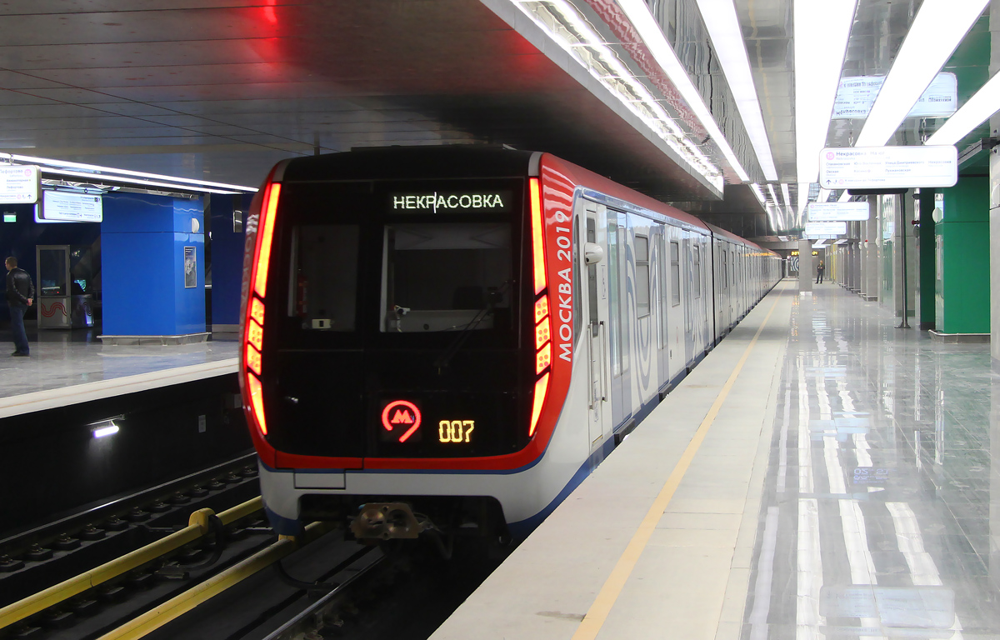
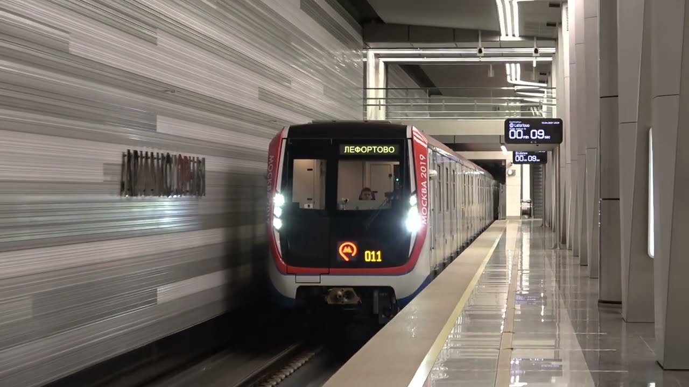
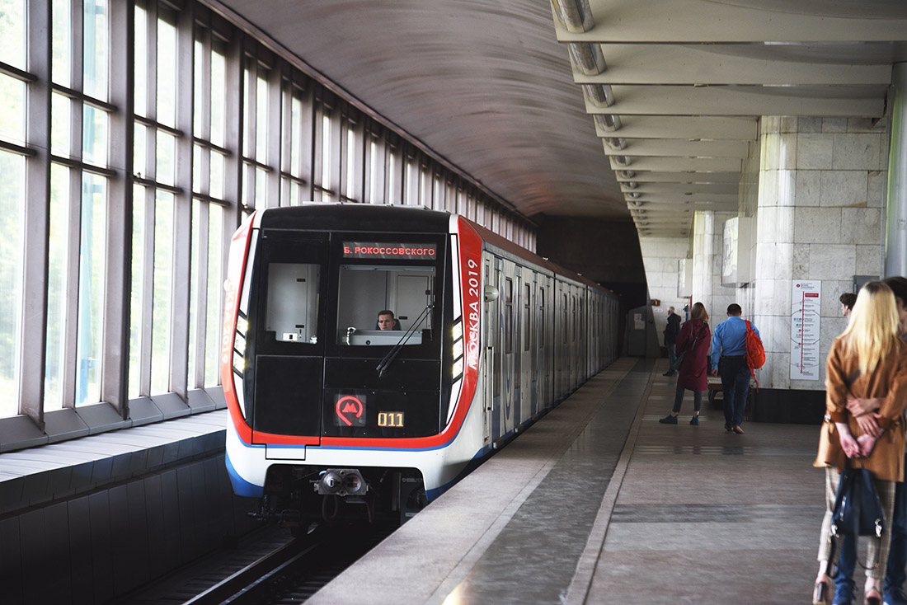
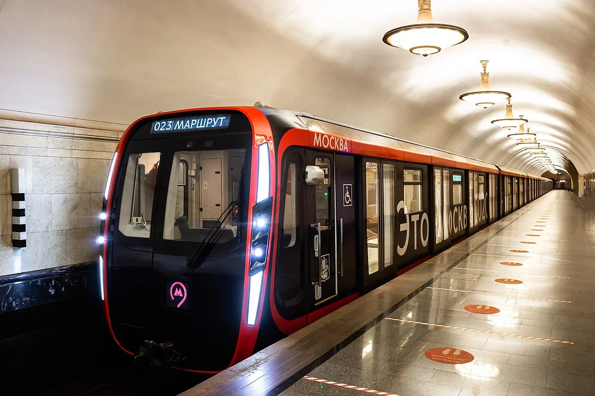

| • 81-765/766/767 «Москва». | |
|  | Эксплуатируются с пассажирами с 14 апреля 2017 года на Таганско-Краснопресненской линии, с 14 мая 2018 года на Калужско-Рижской линии, с 27 марта 2020 года на Некрасовской линии, и с 4 июля 2020 года на Сокольнической линии. С 22 декабря 2020 года по 11 ноября 2021 года эксплуатировались на Большой кольцевой линии. Всего эксплуатируется 114 восьмивагонных составов, сформированных из 912 вагонов |
| • 81-765.2/766.2/767.2 «Москва». | |
 |
Модификация .2, эксплуатирующаяся со 2 июля 2018 года на Филёвской линии, имеет частично продольную планировку сидений в головных вагонах, кнопки открытия дверей и адаптированную к условиям наземной линии климатическую систему. Всего эксплуатируется 27 шестивагонных составов, сформированных из 162 вагонов. |
| • 81-765.3/766.3/767.3 «Москва». | |
|  | Эксплуатировались с 30 декабря 2018 года по 4 ноября 2021 года на Солнцевской и Большой кольцевой линиях, с 25 октября 2018 года по декабрь 2020 года составы также эксплуатировались на Калужско-Рижской линии. С 13 октября 2021 года повторно эксплуатируются на Калужско-Рижской линии. Всего эксплуатируется 9 восьмивагонных составов, сформированных из 72 вагонов. |
| • 81-765.4/766.4/767.4 «Москва-2019». | |
|  | Эксплуатируются с 18 марта 2019 года на Сокольнической линии, с 3 июня 2019 года на Некрасовской линии, с 8 октября 2019 года по март 2020 года составы также эксплуатировались на Калужско-Рижской линии. Всего эксплуатируется 52 восьмивагонных состава, сформированных из 416 вагонов. |
| • 81-775/776/777 «Москва-2020» | |
|  | 5 сентября 2020 года в электродепо «Митино» поезд был впервые официально представлен мэру города и журналистам. В этом же месяце началась обкатка составов на Солнцевской и Большой кольцевой линиях. 6 октября 2020 года семивагонный состав модели «Москва-2020» совершил первую поездку с пассажирами на Кольцевой линии. 1 декабря 2020 года была начата пассажирская эксплуатация восьмивагонных поездов на Калужско-Рижской линии. В конце октября 2021 года началась передача составов «Москва-2020» с Калужско-Рижской на Большую кольцевую линию. |
сделали Лядов Тимофей и Никитин Станислав